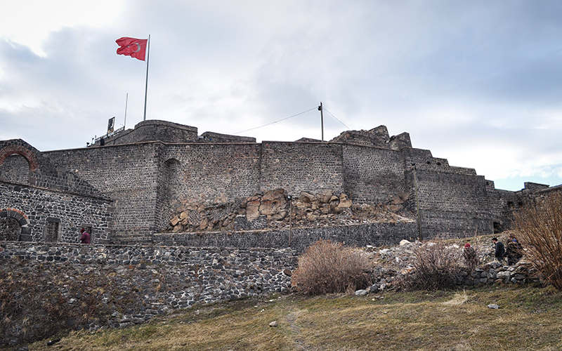
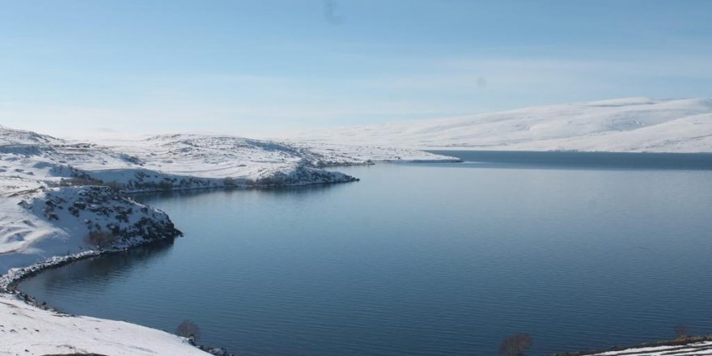
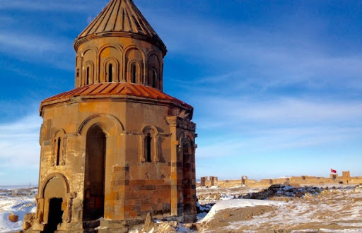

KARS KALESİ
Kale, İç Kale veya Stadel olarak anılır.
M.S. 1153 yılında Selçuklulara bağlı Saltuklu Sultanı Melik İzzeddi'in emri ile Veziri
Firuz Akay tarafından yaptırılmıştır. Kenti çevreleyen dış kale surları da 12. yy'da inşa edilmeye başlanmış
1386 tarihinde Timur tarafından yıkılan kale 1579 yılında Osmanlı Padişahı III.Murat'ın fermanı ile Kars'a gelen
Lala Mustafa Paşa tarafından kale ve dış cephe surları yeniden yaptırılmıştır.(Kale kalıntılarında dört köşe mermer
kitabe bulunmuş dış surların kapısına koydurulmuştur. Bu kitabeye göre "1152 yılında Sultan Melik İzzetin'in emri ile Veziri
Firuz Akay tarafından yaptırılmıştır. Kaleyi 1386 yılında da Timur yerle bir etmiş, 1579 yılında tekrar III. Murat'ın emriyle
Lala Mustafa Paşa yeniden yaptırmıştır.") 1616 ve 1636 yıllarında 2 defa onarımdan geçmiş, şehir merkezine bazı eserler
eklenmiştir. Kaynaklara göre Merkez kale dışında surlar 27.000 metre uzunluğunda olup, 220 burçtan meydana gelmiştir.
kale doğu-batı istikametinde 250 mt. Kuzey-güney istikametinde yaklaşık 90 mt'dir. 1877-1878 Osmanlı-Rus savaşından sonra
40 yıllık
Rus işgalinde tahribatlara uğramış, orijinal özelliğini ve kullanımını yitirmiştir.

Çıldır Gölü
Çıldır Gölü, Ardahan ve Kars il sınırları içerisinde kalan göl,
123 km2 alanı ile Doğu Anadolu Bölgesi'nin en büyük tatlı su ve en büyük ikinci göldür.
Deniz seviyesinden 1959 metre yükseklikte bulunan gölün en derin noktası 42 metredir. Çıldır Gölü,
bir lâv akıntısı ile bir moloz mahrutu tarafından müştereken meydana getirilmiş bir doğal set gölüdür.
[1] Birçok dere ve pınarlarla beslenmekte olan gölün tek çıktısı kuzey batısında yer alan Ermenistan sınırında bulunan
Arpaçay kolu olan Telek Çayı'dır. En büyük olanı Akçakale harabelerinin yanında yer alan adadır. Göl etrafında çok az bitki
örtüsü gelişmiştir ancak gölü çevreleyen otlaklarda yoğun hayvancılık yapılmaktadır.
Yılın dört mevsiminde yapılabilen balıkçılık yöre halkı için önemli bir ekonomik gelir kaynağı teşkil etmektedir.
Gölde balıkçılık önemli bir insan aktivitesi olup, kışın buz tutan gölde kalın buz tabakası kırılarak balık avlanmaktadır.
Gölde yakalanan en önemli balık türü (aynalı) Sazan (Cyprinus carpio). Ancak kurak geçen mevsimlerde, göl seviyesi hızla
çekilmekte ve bu nedenle sazan gibi türlerin üremesi için gerekli sazlıklar daralmaktadır.
Gölün sadece kuzey batısında seddeyle ayrılmış bataklık ve sulak çayırlar bulunur.
Genelde göl çevresi mera vasıflı olup, sert bölge iklimi tarıma olanak vermez. DSI
tarafından gölü beslemek amacı ile yapılan derivasyon tünellerinin hem diğer havzalardaki
kirlilik yükünü göle taşıması, hem de hayvancılık açısından çok önemli çayırların kurumasına neden
olması mümkündür.

Ani Harabeleri
Ani (Ermenice: Անի, Latince: Abnicum), Kars şehrinin güneydoğusunda,
il merkezine 42 km uzaklıkta, Arpaçay boyunda bulunan ören yeri.
961-1045 yılları arasında Pakraduni Hanedanlığı'ndan Ermeni hükümdarlarının başkenti olmuştur.
11. ila 12. yüzyıla ait bazı İslam mimarisi eserlerini de barındırır. 2012'de UNESCO tarafından Dünya Mirası
Geçici Listesi'ne dahil edilen Ani, 2016'da ise Dünya Mirası olarak tescil edildi.
Kentin adı en erken 6. yüzyılda Gamsaragan sülalesinden
Ermeni beylerine ait bir müstahkem yer olarak geçer. Ermeni Gamsaragan ailesi ile Ermeni Bagrationi
(Bagrat) ailesi arasındaki uzun mücadele ikincilerin zaferi ile sonuçlanmış ve 780 yılında Gamsaragan'lar
mülklerini Bagratlılara satarak Bizans ülkesine göçmüşlerdir.
Bagratlı I. Aşot 885 yılında Abbasi Halifesi ve Bizans İmparatoru tarafından "Ermenistan Kralı/Şehinşah-ı Armen"
olarak tanınmıştır. Aşot ve oğulları önce (bugünkü Tuzluca ilçesinin 8 km kuzeyinde Halimcan köyü yakınında bulunan)
Bagaran kentinde, daha sonra (Akyaka ilçesinde Koyucak mevkiinde bulunan) Şirakavan'da ve Kars merkezde hüküm sürmüştür.
961 yılında 3. Aşot (953-977) başkentini Ani'ye taşıyarak burada büyük bir kentin inşasına başlamıştır.